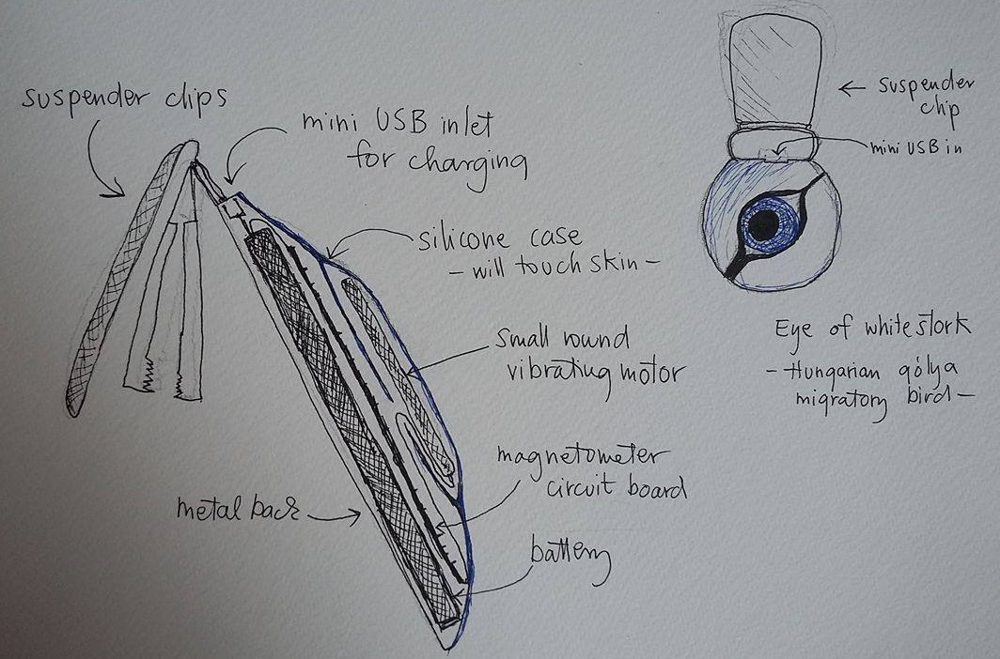
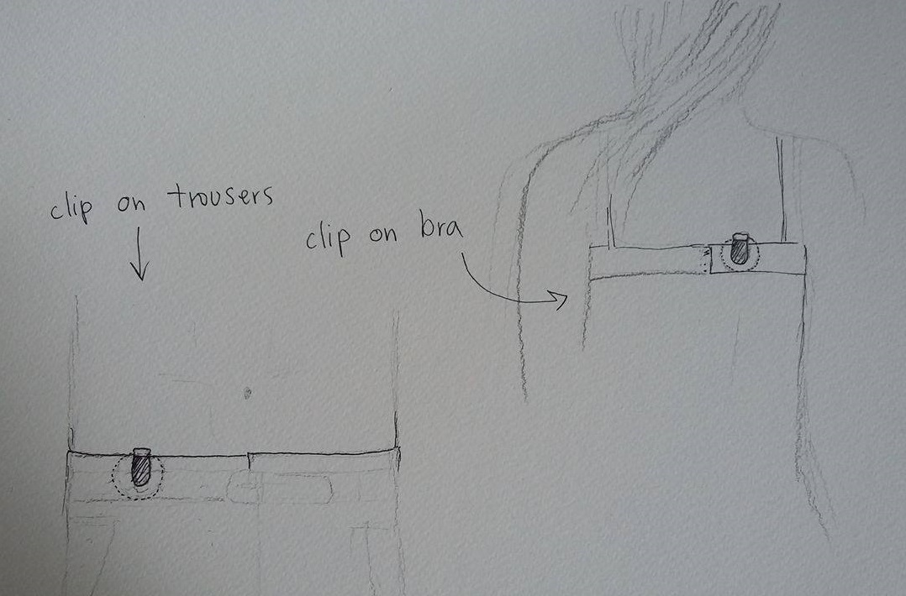

The finals of the International Genetically Engineered Machines Competition are approaching. This year, Imperial`s iGEM team is Ecolibrium, they designed a genetic system for the regulation of population ratios in cocultures. It is an awesome idea and I am so proud of them. Also check out the Chalmers-Gotheborg team. My friend Dora Vitay is on it and it is great stuff! Turning pollution into a solution.
Check out my official webpage at Imperial College London here
I have this idea for some kind of heptic device that gives you intuitive sense of direction. This is a thing that alays wanted to do because I really-really want to have an intuitive sense of magnetic North in order to augment my horrible sense of direction. Something similar to NorthPaw, the heptic compass belt or NorthSense, but one with a practical badge-like design for better wearibility. Here is the rough design. I called it Corongo, it meand Stork in Sewaheli language.
Corongo design
 This is just the place where I shall collect those inspiring random sthings that make me smile.
How cool is that such a thing exists!? I put the chesnut trees in Ravenscourt park on the map.
Find me on Twitter, facebook and Linkedin or just leave a message to get in touch!